～ピアス観覧車～
作ろうと思ったわけ
ピアスホールを開けてから、買ったピアスがごちゃごちゃしてて飾るか綺麗にしまうかしたいと思っていた。
そこで飾る台を作ってみようと思った、がしかし、どんなものにしようかと悩んだ。悩んだ末にみなとみらいを見て観覧車にしよう！と決めた。
最初は、とりあえず観覧車を絵に描いて、そこからfusion360で図形に落とし込んだ。↓
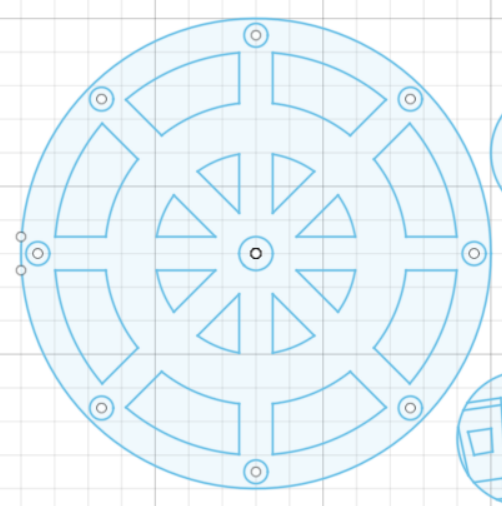
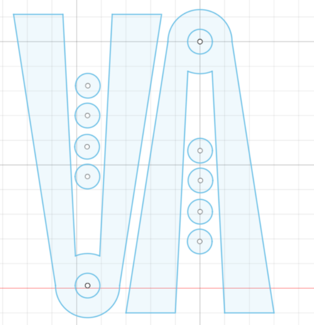
そして、レーザーカッティングして、組み立てた。↓
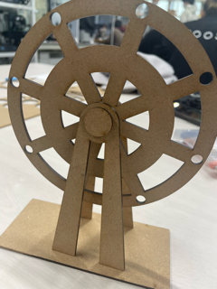
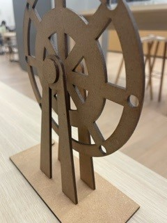
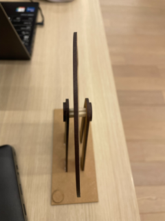
次に、ゴンドラ部分(ピアスを飾るところ)はどんなデザインにするか悩み、オシャレな感じが良かったので、コスメをモチーフにした。
fusion360で描いたもの↓
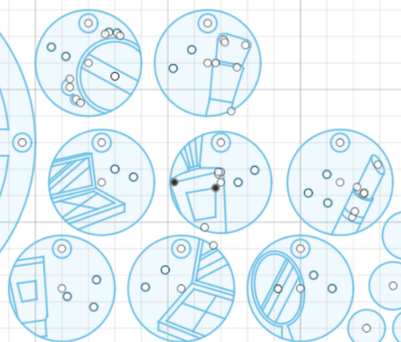
レーザーカッティングしたもの↓
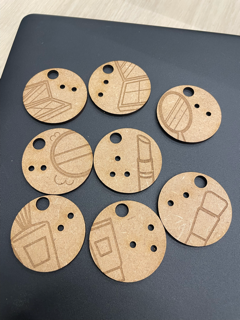
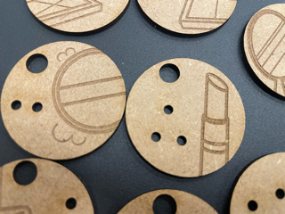
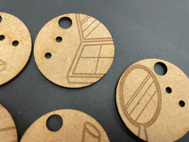
部品は、割り箸を適宜サイズを合わせて、ボンドでくっつけた。写真のようにきのこの山みたいなのができ上がるが、これがかなり重要。
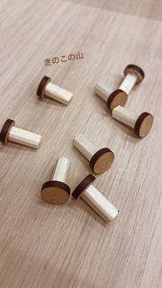
そして出来上がったのがこちら！！
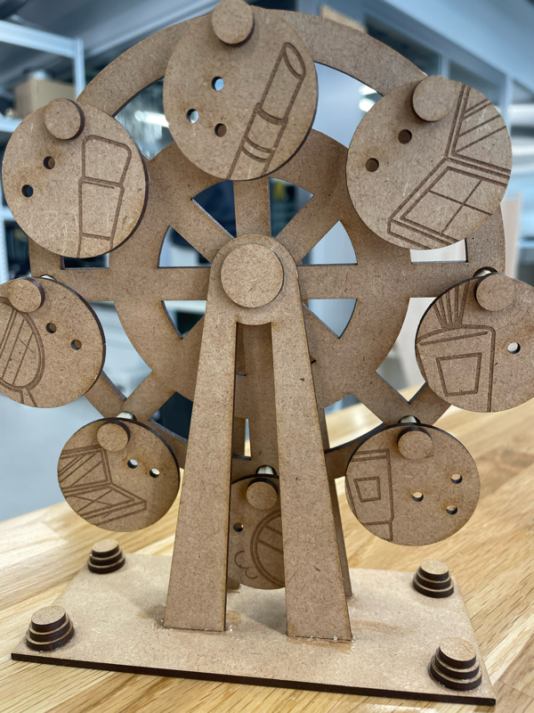
反省と改善
ピアスを引っ掛ける穴が小さかったため、フープピアスやキャッチがないタイプのピアスは飾れなかった。
もっと穴の位置や、穴のサイズを変えたらなんでも飾れるようになると思う。
次に作るなら、平面的な観覧車ではなく立体的な(奥行きのある)観覧車を作れるようにしたい
もっと彫刻もこだわれたらな〜と思った。
個人的な趣味で作ろうかな、、
dxfファイルとaiファイル↓
基本とゴンドラ部分
aiファイル
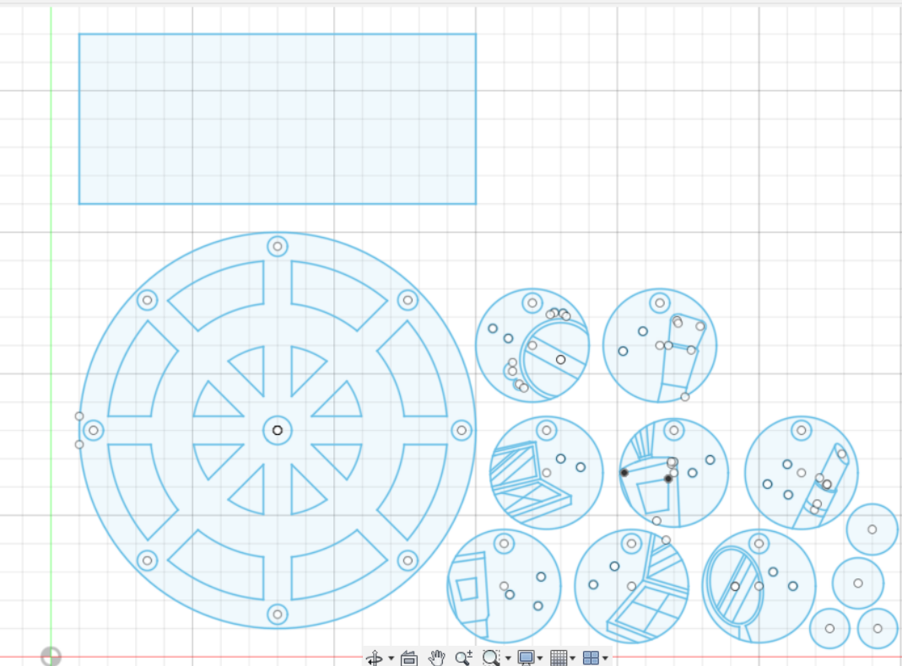
足
aiファイル
追加分（ゴンドラ部分の固定材=きのこの山）と飾り
aiファイル
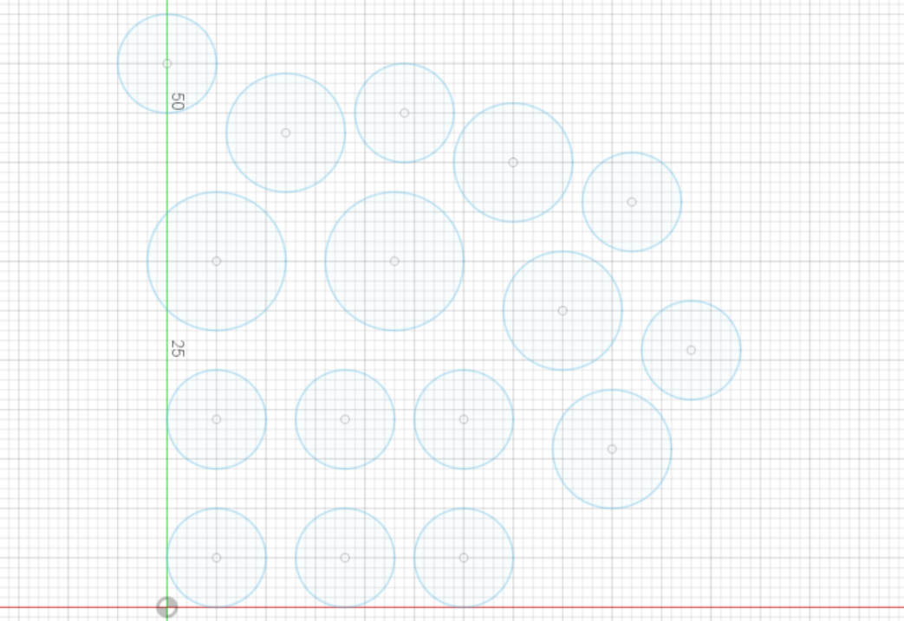